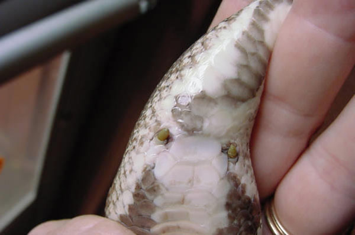

4. Морфологические доказательства
Содержание раздела:
- Введение
- Гомологичные органы
- Пятипалая конечность
- Части ротового аппарата насекомых
- Рудименты
- Атавизмы
- Несовершенство строения организмов
- Эволюция глаза
- Пост-транскрипционная регуляция работы генов
Введение
По мнению религиозных антиэволюционистов (включая сторонников "разумного замысла"), виды живых организмов были созданы разумным Существом, которое имело возможность проектировать каждый вид "с чистого листа", то есть разрабатывать для каждого вида свой собственный, уникальный план строения, наилучшим образом соответствующий тем задачам, которые, по замыслу Творца, данный вид должен был выполнять на Земле. Антиэволюционизм, таким образом, либо предсказывает наличие множества совершенных (идеальных), уникальных и никак не связанных между собой планов строения (что резко противоречит наблюдаемым фактам), либо вообще отказывается от предсказаний (а значит, и от возможности что-либо понять и объяснить в окружающем мире), ссылаясь на "неисповедимость воли Творца" ("раз так создано, значит, так было угодно Богу, а почему - не наше дело").
Наука, напротив, утверждает, что виды в ходе эволюции происходили друг от друга в силу естественных причин, без вмешательства разумных сил. При этом каждый вид не "проектировался с чистого листа", а появлялся в результате относительно небольших модификаций предкового вида, наследуя большинство его свойств - в том числе и те, которые новому виду не очень-то и нужны, и которые вовсе не обязательно являются оптимальными для тех условий, в которых живет новый вид. Поэтому, если идея эволюции верна, мы должны наблюдать в живой природе повсеместные следы происхождения путем модификации, то есть многочисленные свидетельства "переделки" и "подгонки" старых признаков (органов, тканей, планов строения) под новые условия (экологические ниши) и новые задачи (функции). Именно это мы и наблюдаем в природе. Яркие примеры предсказываемых эволюционной теорией "следов происхождения путем модификации" - это гомологичные органы, рудименты, атавизмы, а также многочисленные случаи явного несовершенства строения организмов.
Гомологичные органы
Органы животных разных видов, имеющие один и тот же план строения, занимающие сходное положение в организме животного и развивающиеся из одних и тех же зачатков, называют гомологичными. Если такие органы у разных видов выполняют разные функции, то единственное объяснение сходства строения — происхождение от общего предка. Напротив, если у двух видов независимо развились органы, выполняющие одну и ту же функцию (аналогичные органы), то сходство между этими органами оказывается поверхностным.
Пятипалая конечность
Иллюстрация принципа гомологии
на примере передней конечности млекопитающих.
Конечности состоят из одного и
того же набора костей, но при этом выполняют
самые разные функции. Третья
кость пясти отмечена красным цветом.
Пятипалая конечность, характерная для четвероногих позвоночных — пример гомологии органов. Более того, прослеживается гомология пятипалой конечности и плавников некоторых ископаемых видов кистеперых рыб, от которых произошли первые земноводные.

Кости передних
конечностей девонских кистеперых рыб (слева)
и древнейших четвероногих
(справа).
Условную границу между рыбами и четвероногими
чаще всего
проводят между тиктааликом и акантостегой
(см.:
Как рыбы научились ходить).
Конечности четвероногих различаются по форме и приспособлены к выполнению самых различных функций в самых разных условиях. На примере млекопитающих:
- У обезьян передние конечности вытянуты, кисти приспособлены для хватания, что облегчает лазанье по деревьям.
- У свиньи первый палец отсутствует, а второй и пятый — уменьшены. Остальные два пальца длиннее и тверже остальных, концевые фаланги покрыты копытами.
- У лошади также вместо когтей копыто, нога удлинена за счет костей среднего пальца, что способствует большой скорости передвижения.
- Кроты имеют укороченные и утолщенные пальцы, что помогает при копании.
- Муравьед использует увеличенный средний палец для раскапывания муравейников и гнезд термитов.
- У кита передние конечности представляют собой плавники.
- У летучей мыши передние конечности развились в крылья за счет значительного удлинения четырех пальцев, а крючкообразный первый палец используется, чтобы висеть на деревьях.
При этом все эти конечности содержат один и тот же набор костей с одним и тем же относительным расположением. Единство структуры не может быть объяснено с точки зрения полезности, так как конечности используются для совершенно разных целей. Ни один "разумный дизайнер" никогда не стал бы проектировать крыло летучей мыши и лапу-лопату крота на основе одного и того же набора костей (плечевая, локтевая, лучевая, запястье, пясть, 5 пальцев). Ни один биолог и ни один инженер не смог бы доказать, что именно такой набор костей является идеальной основой для этих "проектов". А значит, единую структуру конечности четвероногие позвоночные унаследовали от общего предка. В ходе эволюции гомологичные части конечностей "подгонялись" естественным отбором к выполнению различных задач, что и обеспечивает кажущееся "совершенство" этих конечностей, их соответствие выполняемым функциям. Но это - явно не работа разумного проектировщика, ищущего наилучшее из возможных инженерных решений. Это - результат слепого природного процесса, который не способен заглядывать на шаг вперед и может только понемногу подправлять уже имеющиеся детали, "подгоняя" их к новым задачам.
Части ротового аппарата насекомых
 |
| Строение головы и ротового
аппарата у различных видов насекомых. a, усики; c, фасеточный глаз; lb, нижняя губа; lr, верхняя губа; md, жвалы (верхние челюсти); mx, максиллы (нижние челюсти). |
Основные части ротового аппарата насекомых — верхняя губа, пара жвал (верхних челюстей), подглоточник (hypopharynx), две максиллы (нижние челюсти) и нижняя губа. У разных видов эти составные части различаются по форме и размеру, у многих видов некоторые из частей утрачены. Особенности строения ротового аппарата позволяют насекомым использовать различные источники пищи (см. рисунок):
(A) В исходном виде (у наиболее примитивных насекомых, и, например, у кузнечика) сильные жвалы и максиллы используются для кусания и жевания.
(B) Медоносная пчела использует нижнюю губу для сбора нектара, а жвалами дробит пыльцу и разминает воск.
(C) У бабочки верхняя губа уменьшена, жвалы отсутствуют, максиллы образуют хоботок.
(D) У самок комаров верхняя губа и максиллы образуют трубку, жвалы используются для протыкания кожи.
Какой разумный дизайнер, имея возможность спроектировать трубочку для питья коктейля любой формы и из любого материала, стал бы изготавливать ее методом перековывания пары вилок? Кто стал бы делать шприц, вытягивая и заостряя "челюсти" пассатижей? Это - характерный и узнаваемый стиль естественного отбора, "слепого часовщика", мастера по подгонкам и переделкам, но никак не разумного и всемогущего дизайнера, которому доступны любые материалы и любые технические решения.
Рудименты
См. также: Рудиментарные органы
Рудиментами называются органы, утратившие своё основное значение в процессе эволюционного развития организма. Рудименты также можно определить как структуры, редуцированные и обладающие меньшими возможностями по сравнению с соответствующими структурами у других организмов. Многие рудиментарные органы не являются совершенно бесполезными и выполняют какие-нибудь второстепенные функции. Если рудимент и оказывается функциональным, то он выполняет относительно простые или малозначимые функции с помощью структур, очевидно предназначенных для более сложных целей. Отсутствие функций не является необходимым критерием рудиментарности. Такие органы крайне распространены в природе.
 Например, птичье крыло — крайне
сложная анатомическая структура, специально приспособленная для активного
полета, но крылья страусов не используются для полета. Эти рудиментарные,
хотя и достаточно сложно устроенные (как и у других птиц) крылья могут
использоваться для сравнительно простых задач, таких как поддержание
равновесия на бегу и привлечение самок — с тем же успехом можно приспособить
микроскоп для заколачивания гвоздей. Таким образом, специфическая сложность
крыльев страуса неадекватна простоте задач, для которых эти крылья
используются, и именно поэтому эти крылья называют рудиментами. В числе
других нелетающих птиц с рудиментарными крыльями — галапагосские бакланы
(Phalacrocorax harrisi), киви и какапо. Для сравнения, крыло пингвина имеет
большое значение, действуя в качестве плавника, а значит — не может
считаться рудиментом.
Например, птичье крыло — крайне
сложная анатомическая структура, специально приспособленная для активного
полета, но крылья страусов не используются для полета. Эти рудиментарные,
хотя и достаточно сложно устроенные (как и у других птиц) крылья могут
использоваться для сравнительно простых задач, таких как поддержание
равновесия на бегу и привлечение самок — с тем же успехом можно приспособить
микроскоп для заколачивания гвоздей. Таким образом, специфическая сложность
крыльев страуса неадекватна простоте задач, для которых эти крылья
используются, и именно поэтому эти крылья называют рудиментами. В числе
других нелетающих птиц с рудиментарными крыльями — галапагосские бакланы
(Phalacrocorax harrisi), киви и какапо. Для сравнения, крыло пингвина имеет
большое значение, действуя в качестве плавника, а значит — не может
считаться рудиментом.
Какапо - нелетающий новозеландский попугай. Вот что пишет о нем Ричард Докинз в книге "The greatest show on earth":
Его летающие предки, очевидно, жили настолько недавно, что какапо все еще пытается летать, хотя уже не имеет средств, чтобы добиться успеха в этом начинании. По словам бессмертного Дугласа Адамса (в книге Last Chance to See), это чрезвычайно толстая птица. Взрослый какапо весит около шести или семи фунтов, а его крылья годны лишь для того, чтобы помахать ими немного для равновесия, когда ему кажется, что он может обо что-то споткнуться. Но о полете не может быть и речи. К сожалению, он, похоже, не только забыл, как летать, но и забыл, что он забыл, как летать. Сильно взволнованный какапо иногда вскарабкивается на дерево и прыгает оттуда, после чего он летит как кирпич и обрушивается на землю бесформенной грудой.
Впрочем, другие авторы иначе описывают прыжки какапо: по их мнению, он использует свои слабые крылья в качестве парашюта, и они позволяют ему даже немного планировать, так что он падает не совсем вертикально, а под углом до 450. В таком случае к нему приложимы те же рассуждения, что и к страусу: налицо использование "микроскопа для забивания гвоздей".
Примеры рудиментов:
-
Глаза у некоторых пещерных и роющих животных, таких как протей, слепыш, крот, астианакс мексиканский (Astyanax mexicanus, слепая пещерная рыба). Эти глаза либо вообще ничего не видят, либо способны лишь отличать свет от тьмы (см.: 'Blind' mole can still tell night from day) и часто скрыты под кожей.
-
Малая берцовая кость у птиц.
-
У человека к рудиментам относятся:
-
хвостовые позвонки;
-
у некоторых людей имеется рудиментарная хвостовая мышца extensor coccygis, идентичная мышцам, двигающим хвост у других млекопитающих. Она прикрепляется к копчику, но, поскольку копчик у человека практически не может двигаться, эта мышца для человека бесполезна.
-
волосяной покров туловища,
-
специальные мышцы arrectores pilorum, которые у наших предков служили для "поднятия шерсти дыбом" (это полезно для терморегуляции, а также помогает животным выглядеть крупнее - для устрашения хищников и конкурентов). У людей сокращение этих мышц приводит к "гусиной коже", что едва ли может иметь какое-то адаптивное значение.
-
три ушные мышцы, которые позволяли нашим предкам шевелить ушами. Встречаются люди, умеющие пользоваться этими мышцами. Это помогает животным с большими ушными раковинами определять направление на источник звука, но у человека данная способность может использоваться только для забавы.
-
морганиевы желудочки гортани,
-
червеобразный отросток слепой кишки (аппендикс). Многолетние наблюдения показали, что удаление аппендикса не оказывает значимого влияния на продолжительность жизни и здоровье людей, если не считать того, что после этой операции люди в среднем чуть реже болеют колитом (Coyne, 2009).
-
хватательный рефлекс у новорожденных (детенышам обезьян он помогает держаться за шерсть матери).
-
икота: это рефлекторное движение мы унаследовали от своих далеких предков - амфибий. У головастика данный рефлекс позволяет быстро пропустить порцию воды через жаберные щели. И у человека, и у головастика этот рефлекс контролируется одним и тем же отделом мозга и может быть подавлен одними и теми же средствами (например, вдыханием углекислого газа или расправлением грудной клетки). Подробнее об этом и других следах нашего эволюционного прошлого см. в статье Нила Шубина (известного палеонтолога, первооткрывателя тиктаалика) Fish out of water.
-
лануго: волосяной покров, развивающийся у человеческого эмбриона почти на всем теле, кроме ладоней и ступней, и исчезающий незадолго до рождения (недоношенные дети иногда рождаются с лануго).
-
-
У многих видов жуков, таких как Apterocyclus honoluluensis, крылья лежат под сросшимися надкрыльями. Многие другие виды насекомых, недавно утратившие способность к полету, такие как водяной скорпион Nepa cinerea, имеют внешне вполне нормальные крылья, которыми никогда не пользуются.
-
У некоторых змей, в том числе у питона, имеются рудиментарные задние конечности.

Рудиментарные задние ноги у питона Python regius
-
Остатки волосяного покрова и тазовых костей у некоторых китообразных. У зародышей китообразных иногда формируются вибриссы (чувствительные волоски на морде), которые впоследствии исчезают. Кроме костей таза, у некоторых китов сохраняется рудиментарная бедренная кость и даже совсем маленький хрящевой (не окостеневающий) остаток большой берцовой кости. У китов к этим рудиментам могут крепиться кое-какие мышцы, у самцов к ним прикреплены пещеристые тела пениса. Однако если эти кости были специально созданы "разумным дизайнером" для выполнения подобных второстепенных функций, совершенно непонятно, зачем было придавать этим костям столь глубокое онтогенетическое и структурное сходство (гомологию) с тазом и костями задних конечностей наземных млекопитающих.

Рудименты таза и костей задней конечности у молодого самца гренландского кита (Balaena mysticetus). Из статьи Thewissen et al., 2009. From Land to Water: the Origin of Whales, Dolphins, and Porpoises.
Атавизмы
См. также: Атавизм
Атавизмом называется появление у особи признаков, свойственных отдаленным предкам, но отсутствующих у ближайших. Появление атавизмов объясняется тем, что гены, отвечающие за данный признак, сохранились в ДНК, но не функционируют, так как подавляются действием других генов.
Примеры атавизмов:
- Хвостовидный придаток у человека;
- Сплошной волосяной покров на теле человека;
- Добавочные пары молочных желез;
- Задние ноги у китов;
- Задние плавники у дельфинов;
- Задние ноги у змей;
- Дополнительные пальцы у лошадей;
- Возобновление полового размножения у ястребинки волосистой и у клещей семейства Crotoniidae.
Яркий пример атавизма: дельфин с задними конечностями. Из статьи Thewissen et al., 2009. From Land to Water: the Origin of Whales, Dolphins, and Porpoises.
Аргументы в пользу эволюции тут те же, что и для рудиментов. Эволюционное объяснение рудиментов и атавизмов состоит в том, что органы (признаки), ставшие бесполезными для организма, не утрачиваются в одночасье, а могут сохраняться в течение миллионов лет, постепенно редуцируясь и разрушаясь под грузом мутаций (отбор перестает отбраковывать мутации, нарушающие развитие данного признака, и эти мутации начинают свободно накапливаться, но процесс этот очень медленный). По ходу дела, естественно, редуцирующийся орган может приобрести новые функции. Даже если внешнее проявление признака полностью утрачено, в геноме еще долго могут сохраняться фрагменты генетических "программ", обеспечивавших развитие данного признака у предков. При особых обстоятельствах (мутации, экстремальные воздействия на развивающийся эмбрион) эти программы могут иногда "сработать" - и тогда мы получаем атавизм.
Например, все современные птицы беззубы, но они произошли от зубастых предков. В соответствии с этим у куриного эмбриона можно вызвать такое нарушение нормального хода развития, что у него в челюстях сформируются зачатки зубов (см.: Mutant Chicken Grows Alligatorlike Teeth).
Еще один пример: у современных млекопитающих отсутствуют ребра на поясничных позвонках. Однако у далеких предков современных млекопитающих - примитивных мезозойских зверей, так же как и у их еще более далеких предков, зверозубых ящеров, ребра на поясничных позвонках имелись. Как выяснилось, мутации гена Hox10 могут приводить к появлению поясничных ребер у мышей, т.е. к типичному атавизму. Подробнее см. в заметке: Новая палеонтологическая находка проливает свет на раннюю эволюцию млекопитающих.
Несовершенство строения организмов
В ходе эволюции каждая новая конструкция не проектируется с нуля, а получается из старой конструкции за счет последовательности небольших улучшений. Эта особенность является причиной специфических несообразностей в строении живых организмов.
Например, возвратный гортанный нерв у млекопитающих идет от мозга к сердцу, огибает дугу аорты и возвращается к гортани. В результате нерв проходит гораздо более длинный путь, чем необходимо, а аневризма аорты может приводить к параличу левой голосовой связки. Особенно наглядно проблема видна на примере жирафа, у которого длина возвратного нерва может достигать 4 метров, хотя расстояние от мозга до гортани — всего несколько сантиметров. Такое расположение нервов и сосудов млекопитающие унаследовали от рыб, у которых шея отсутствует.

Расположение четвертой ветви блуждающего нерва у не имеющей шеи акулы вполне рационально. У жирафа, унаследовавшего относительное расположение нервов и кровеносных сосудов от далеких рыбообразных предков, путь гомологичной ветви блуждающего нерва (=возвратного гортанного нерва, recurrent laryngeal nerve) потрясающе нелеп: "за семь верст киселя хлебать". Рисунок из книги Р. Докинза "The greatest show on earth".
У ранних рыбообразных эмбрионов всех позвоночных животных возвратный гортанный нерв (= четвертая бранхиальная ветвь блуждающего нерва), отделившись от блуждающего нерва, проходит позади кровеносного сосуда шестой жаберной дуги и иннервирует соответствующую часть жаберного аппарата. У взрослых рыб нерв и сосуд остаются в том же самом положении. У предков млекопитающих в ходе эволюции кровеносный сосуд пятой жаберной дуги редуцировался, а сосуды четвертой и шестой дуг сместились (вслед за сердцем) в грудной отдел туловища. Здесь они стали аортой и боталловым протоком (ductus arteriosus) - поперечным сосудом, который у эмбрионов наземных позвоночных соединяет аорту с легочной артерией. Все эти события воспроизводятся в развитии эмбрионов. Вскоре после рождения боталлов проток зарастает и превращается в непроходимую для крови артериальную связку (ligamentum arteriosum). Но возвратный гортанный нерв, по-прежнему проходящий позади сосуда шестой дуги (т.е. боталлова протока), так и остается связанным с эмбриональными стуктурами той же дуги, которые не спускаются в грудной отдел, а остаются рядом с мозгом и превращаются в элементы гортани. По мере смещения сосуда шестой дуги нерву приходилось все более вытягиваться, становясь "возвратным". Эволюционная история нерва воспроизводится в развитии эмбрионов млекопитающих.
Желудочно-кишечный тракт млекопитающих пересекается с дыхательными путями, в результате мы не можем одновременно дышать и глотать, а кроме того существует опасность подавиться. Эволюционное объяснение данного обстоятельства заключается в том, что предками млекопитающих являются остеолепиформные кистепёрые рыбы, которые заглатывали воздух, чтобы дышать.
Выпадение матки, боли в пояснице у людей связаны с тем, что мы используем для прямохождения тело, сформированное эволюцией в течение сотен миллионов лет для передвижения на четырех конечностях.
Эволюция глаза. Еще один пример несовершенства в строении организмов — сетчатка позвоночных и слепое пятно. У позвоночных нервы и сосуды сетчатки расположены поверх светочувствительных клеток, а значит — свет должен пройти через несколько слоев клеток прежде чем попасть на палочки и колбочки. Слепое пятно — это отверстие в сетчатке, через которое нервы идут от сетчатки к мозгу. Для решения многочисленных проблем, вызванных таким устройством сетчатки, у позвоночных есть ряд адаптаций, в частности у нервов, идущих поверх сетчатки, отсутствует миелиновая оболочка, что повышает их прозрачность, но снижает скорость передачи сигнала (еще один пример "подгонок" и "подстроек", характерных для лишенного дара предвидения эволюционного процесса). Схожие по строению глаза головоногих лишены этого недостатка. Это наглядно показывает, что и у позвоночных могли бы быть глаза без слепых пятен.
Великий немецкий ученый XIX века Герман фон Гельмгольц сказал о человеческом глазе: "Если бы какой-нибудь оптик попытался продать мне инструмент со всеми этими дефектами, я бы счел себя в полном праве в самых сильных выражениях обвинить его в разгильдяйстве, и вернул бы ему его инструмент".
Упрощенная схема расположения нейронов сетчатки. Сетчатка состоит из нескольких слоев нейронов. Свет падает слева и проходит через все слои, достигая фоторецепторов (правый слой). От фоторецепторов сигнал передается биполярным клеткам и горизонтальным клеткам (средний слой, обозначен желтым цветом). Затем сигнал передается амакриновым и ганглионарным клеткам (левый слой). Эти нейроны генерируют потенциалы действия, передающиеся по зрительному нерву в мозг.
 Причины, по
которым глаз у позвоночных устроен так нелепо ("вывернут наизнанку"),
описаны, в частности, в книге Нила Шубина "Your inner fish".
Они уходят корнями в самые ранние этапы эволюции хордовых.
Далекие предки позвоночных животных, похожие на ланцетника, имели
фоторецепторы, обращенные во внутреннюю полость спинной нервной трубки.
Нервная трубка, в свою очередь, сформировалась путем впячивания нервной
пластинки, представлявшей собой специализированный участок кожных покровов
(эпителия). Таким образом, изначально фоторецепторы смотрели наружу, в
сторону света, но при формировании спинной нервной трубки - характерной
черты хордовых - они оказались обращенными во внутреннюю полость этой трубки
(невроцель). Для животных, подобных ланцетнику, это не имеет особого
значения, потому что они очень маленькие и совсем прозрачные. А главное,
светочувствительные клетки у таких животных все равно не могли различать
контуры объектов: они могли лишь отличать свет от тьмы, и четкость
изображения для них не имела значения. Более сложные глаза позвоночных
формировались из выпячиваний передней части нервной трубки, которая стала
головным мозгом. При этом фоторецепторы так и остались обращенными вовнутрь
- никакая мутация не могла бы вывернуть их наружу при таком способе
формирования нервной системы, который позвоночные унаследовали от своих
похожих на ланцетника предков. Разумеется, для "разумного дизайнера",
начинающего проект с чистого листа, подобной проблемы просто не существовало
бы.
Причины, по
которым глаз у позвоночных устроен так нелепо ("вывернут наизнанку"),
описаны, в частности, в книге Нила Шубина "Your inner fish".
Они уходят корнями в самые ранние этапы эволюции хордовых.
Далекие предки позвоночных животных, похожие на ланцетника, имели
фоторецепторы, обращенные во внутреннюю полость спинной нервной трубки.
Нервная трубка, в свою очередь, сформировалась путем впячивания нервной
пластинки, представлявшей собой специализированный участок кожных покровов
(эпителия). Таким образом, изначально фоторецепторы смотрели наружу, в
сторону света, но при формировании спинной нервной трубки - характерной
черты хордовых - они оказались обращенными во внутреннюю полость этой трубки
(невроцель). Для животных, подобных ланцетнику, это не имеет особого
значения, потому что они очень маленькие и совсем прозрачные. А главное,
светочувствительные клетки у таких животных все равно не могли различать
контуры объектов: они могли лишь отличать свет от тьмы, и четкость
изображения для них не имела значения. Более сложные глаза позвоночных
формировались из выпячиваний передней части нервной трубки, которая стала
головным мозгом. При этом фоторецепторы так и остались обращенными вовнутрь
- никакая мутация не могла бы вывернуть их наружу при таком способе
формирования нервной системы, который позвоночные унаследовали от своих
похожих на ланцетника предков. Разумеется, для "разумного дизайнера",
начинающего проект с чистого листа, подобной проблемы просто не существовало
бы.
Начало формирования нервной трубки из складки эпителия у человеческого зародыша.
Схема строения глаз современных моллюсков разной степени сложности — от простейшего светочувствительного пятна (у некоторых брюхоногих; вверху) до глаза, сравнимого по сложности и сходного по строению с человеческим (у осьминога; внизу) — наглядно показывает несостоятельность утверждений креационистов, будто такие сложные структуры, как глаза, не могли возникнуть постепенно, а значит, были сотворены такими, каковы они есть. Иллюстрация из книги Science, Evolution, and Creationism // Washington, D.C.: The National Academies Press. (PDF 3,2 Мб можно бесплатно скачать здесь, предварительно зарегистрировавшись).
Как видно из этой схемы, у моллюсков фоторецепторы как были изначально обращены наружу, к свету, так и остались; поэтому нервные волокна у них присоединяются к светочувствительным клеткам сзади, а не спереди, и нет никаких слепых пятен. Моллюскам в данном случае просто "повезло", что у них светочувствительные органы изначально не были связаны со впячивающимися (подобно зачатку нервной трубки хордовых) участками эпителия.
Типичный аргумент антиэволюционистов - аргумент от "несократимой сложности", который применительно к глазу звучит так: "сложный глаз (например, человеческий) не мог возникнуть путем постепенной эволюции, потому что глаз полезен только как целое - удалите какую-то часть глаза, и он станет бесполезен." Приведенная выше схема показывает, как на самом деле может идти эволюция сложного глаза. Ключевая ошибка в рассуждениях антиэволюционистов состоит в том, что на самом деле глаз полезен не только "как целое", т.е. в полностью готовом виде. Простейший глазок, состоящий из нескольких светочувствительных эпителиальных клеток, способен только отличать день от ночи, но это все же лучше, чем никакого зрения вообще. Впячивание такого глазка дает дополнительное преимущество, позволяя определять направление на источник света. Дальнейшее впяивание превращает глаз в "камеру-обскуру" и позволяет уже различать объекты; последующее добавление хрусталика улучшает фокусировку, и т.д. Каждый маленький шажок на этом долгом эволюционном пути был выгоден организмам, и поэтому поддерживался естественным отбором.
Пост-транскрипционная регуляция работы генов. "Несовершенство дизайна" сплошь и рядом обнаруживается и на молекулярном уровне. Типичным примером является такое широко распространенное явление, как пост-транскрипционная регуляция активности генов (Post-transcriptional regulation). Когда деятельность какого-то гена не нужна в данной клетке или на данном этапе развития организма, ген может быть отключен простым и эффективным способом - при помощи специальных регуляторных белков (факторов транскрипции), которые отключают транскрипцию, то есть синтез матричной РНК на матрице ДНК. Однако во многих случаях тот же самый результат достигается другим, гораздо более расточительным способом: клетка сначала синтезирует матричную РНК, тратя на это много энергии и ресурсов, а затем сразу же уничтожает с таким трудом изготовленную молекулу. Инженерное решение, совершенно безграмотное и недопустимое с точки зрения любого разумного дизайнера! Однако именно таков стиль естественного отбора, который не умеет заглядывать вперед и слепо поддерживает те полезные мутации, которые ему "подвернулись" в данный момент. Например, посттранскрипционное "отключение" генов, осуществляемое при помощи микроРНК (см.: microRNA), по-видимому, появилось из-за того, что отбор "зацепился" за древнюю систему узнавания и обезвреживания чужеродных (например, вирусных) молекул РНК (см.: РНК-интерференция). Существуют весьма сложные и вычурные способы пост-транскрипционной регуляции генов. Например, в клетках есть система "молекулярной цензуры", которая служит для уничтожения бракованных и чужеродных молекул РНК. "Брак" распознается по конкретным простым признакам (например, по преждевременным стоп-кодонам). И поскольку такая система уже существует, она стала "зацепкой" для естественного отбора, который на ее основе создал очень замысловатую и, по-видимому, неэкономную систему регуляции. В синтезированную клеткой, но не нужную ей молекулу РНК вносятся такие изменения, что "цензура" воспринимает эту РНК как бракованную, подлежащую уничтожению (см.: Сравнение геномов человека и мыши помогло обнаружить новый способ регуляции работы генов). Зачем такие сложности - сначала синтезировать ненужную молекулу РНК, затем "подставить" ее надзирающим органам при помощи своеобразного молекулярного "подлога", и только после этого уничтожить? Ведь можно было с самого начала просто не синтезировать ее! Это характерный «почерк» эволюции, совсем не похожий на разумное проектирование, а похожий, скорее, на самосборку чего получится из чего попало. Если бы живая клетка была создана разумным дизайнером, он бы, конечно, решил эту задачу гораздо аккуратнее и красивее, например, при помощи факторов транскрипции. Но клетка делалась не разумным дизайнером, и это хорошо заметно, если присмотреться к деталям ее устройства и функционирования.
Еще один пример неоптимального дизайна - наличие дублирующих друг друга наборов генов рибосомных и транспортных РНК в ядерном и митохондриальном геномах. Митохондриальный геном мутирует гораздо чаще, чем ядерный, и поэтому многие люди страдают из-за наследственных "митохондриальных болезней". Часть этих болезней вызвана мутационной "поломкой" митохондриальных генов транспортных РНК. Человек страдает из-за того, что в его митохондриях испорчена одна из разновидностей транспортных РНК. При этом в цитоплазме тех же самых клеток полным-полно нормально работающих и точно таких же по функции транспортных РНК, кодируемых ядерным геномом. Но естественный отбор "не позаботился" создать систему переноса тРНК из цитоплазмы в митохондрии, и поэтому такие болезни практически неизлечимы. При этом подобная система, которая могла бы спасти многие тысячи людей, есть у лейшманий - паразитических жгутиконосцев (см.: Лекарство от наследственных болезней будут выделять из паразитического жгутиконосца).